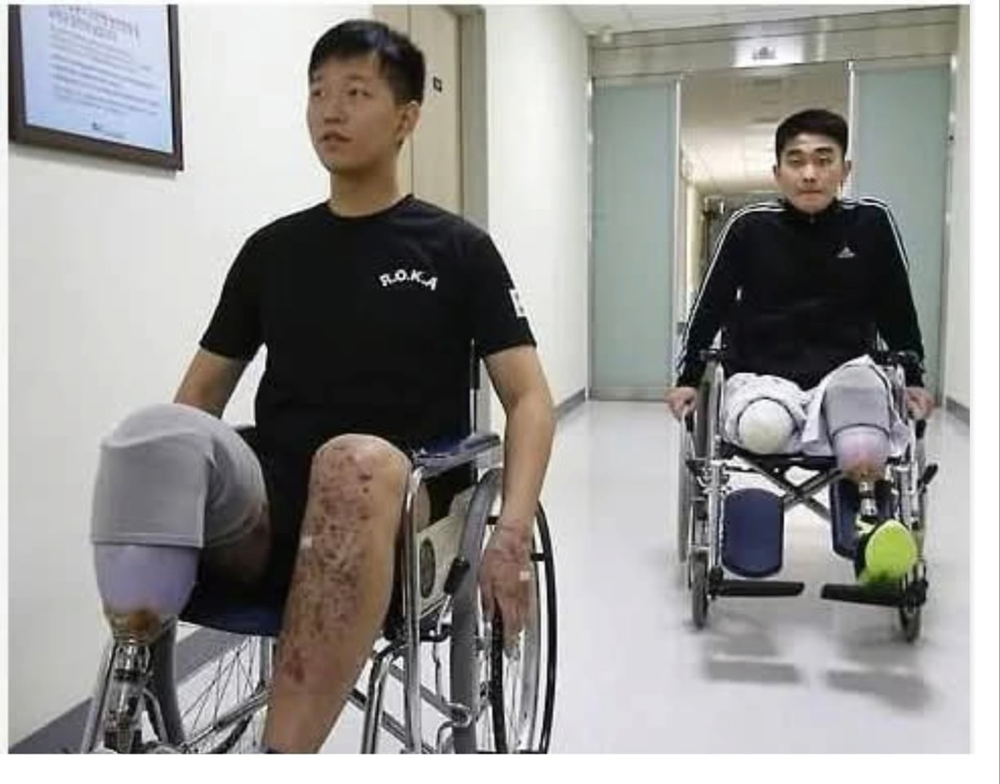

이번 비무장지대 목함지뢰 폭발로 발목을 잃은 수색대대장 중령과 수색팀장 중사의 최근 모습
한 사람은 오른쪽 발목을 잃었고, 다른 사람은 오른쪽 다리와 왼쪽 발목을 잃었음

이번 비무장지대 목함지뢰 폭발로 발목을 잃은 수색대대장 중령과 수색팀장 중사의 최근 모습
한 사람은 오른쪽 발목을 잃었고, 다른 사람은 오른쪽 다리와 왼쪽 발목을 잃었음
23렙 어케 찍음
이렇게까지 하기에 고렙이 되는것
훠훠 짜짱면 드립치던 놈 기억나네..
잘가라
개시발 빨갱이세기들
에이 2015년 이였네
ㅂㅁ이 왜 많나 했더만 당당하게 구라치는거보소
그냥 자연스럽게 가짜뉴스 올리네
난 저분중 한분이 쓴 수기를 현역때 인트라넷에서 읽었는데 맘 아프더라
발목 동상 세워보리기
저분들 gp와서 왕뚜껑 빌려 주고 가끔 같이 담배 피면서 이야기 하던거 생각나네